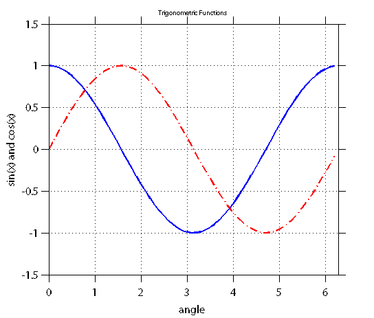
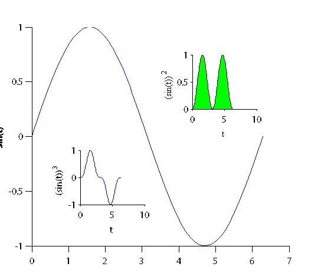
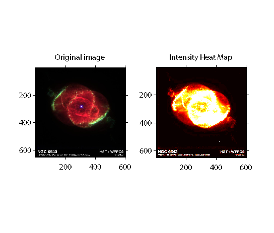
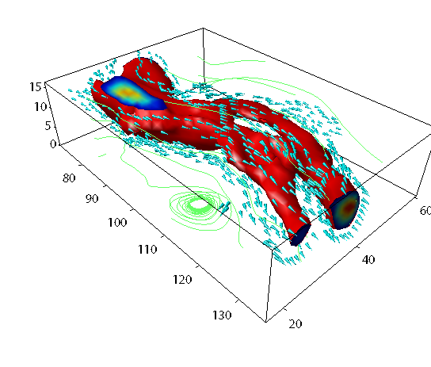
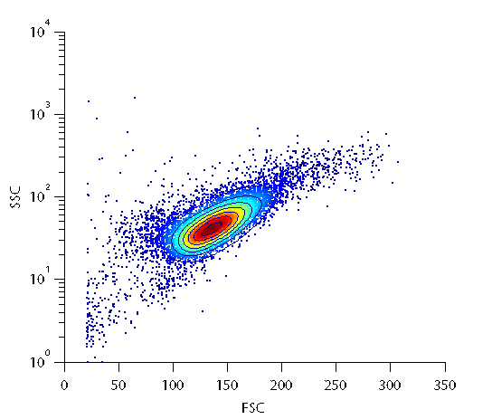

Motivation
some cool example plots generated entirely in matlab
Contents
Line Plot 2D
%http://www.mathworks.com/matlabcentral/fileexchange/35214-matlab-plot-gallery-line-plot-2d-1/content/html/Line_Plot_2D_1.html % Define values for x, y1, and y2 x = 0: .1 : 2*pi; y1 = cos(x); y2 = sin(x); % Plot y1 vs. x (blue, solid) and y2 vs. x (red, dashed) figure; plot(x, y1, 'b', x, y2, 'r-.', 'linewidth', 2); % Turn on the grid grid on; % Set the axis limits axis([0 2*pi -1.5 1.5]); % Add title and axis labels title('Trigonometric Functions', 'fontsize', 10); xlabel('angle'); ylabel('sin(x) and cos(x)');
Dendrograms
%http://www.mathworks.com/help/stats/dendrogram.html rng('default') % For reproducibility X = rand(10,3); tree = linkage(X,'average'); figure() H = dendrogram(tree,'Orientation','left','ColorThreshold','default'); set(H,'LineWidth',2)

Plot in plots
%http://www.mathworks.com/matlabcentral/fileexchange/35245-matlab-plot-gallery-plot-in-plot/content/html/Plot_in_Plot.html % Create data t = linspace(0,2*pi); t(1) = eps; y = sin(t); % Place axes at (0.1,0.1) with width and height of 0.8 figure; handaxes1 = axes('position', [0.1 0.1 0.8 0.8]); % Main plot plot(t, y); xlabel('t'); ylabel('sin(t)'); set(handaxes1, 'box', 'off'); % Adjust XY label font handxlabel1 = get(gca, 'xlabel'); set(handxlabel1, 'fontsize', 16, 'fontweight', 'bold'); handylabel1 = get(gca, 'ylabel'); set(handylabel1, 'fontsize', 16, 'fontweight', 'bold'); % Place second set of axes on same plot handaxes2 = axes('position', [0.6 0.6 0.2 0.2]); fill(t, y.^2, 'g'); set(handaxes2, 'box', 'off'); xlabel('t'); ylabel('(sin(t))^2'); % Adjust XY label font set(get(handaxes2, 'xlabel'), 'fontname', 'times') set(get(handaxes2, 'ylabel'), 'fontname', 'times') % Add another set of axes handaxes3 = axes('position', [0.25 0.25 0.2 0.2]); plot(t, y.^3); set(handaxes3, 'box','off'); xlabel('t'); ylabel('(sin(t))^3');
Curve Fit with Confidence Bounds
%http://www.mathworks.com/matlabcentral/fileexchange/35243-matlab-plot-gallery-curve-fit-with-confidence-bounds/content/html/Curve_Fit_with_Confidence_Bounds.html % Load the data for x, y, and yfit load fitdata x y yfit; % Create a scatter plot of the original x and y data figure; scatter(x, y, 'k'); % Plot the fit of the y data line(x, yfit, 'color', 'k', 'linestyle', '-', 'linewidth', 2); % Plot the confidence bounds line(x, yfit + 0.3, 'color', 'r', 'linestyle', '--', 'linewidth', 2); line(x, yfit - 0.3, 'color', 'r', 'linestyle', '--', 'linewidth', 2); % Add a legend and axis labels legend('Data', 'Localized Regression', 'Confidence Intervals', 2); xlabel('X'); ylabel('Noisy');

Plot 3D spectra
%http://www.mathworks.com/matlabcentral/fileexchange/35262-matlab-plot-gallery-line-plot-3d/content/html/Line_Plot_3D.html % Load the spectra data load spectraData masscharge time spectra; % Create the 3D plot figure; plot3(masscharge, time, spectra); box on; % Set the viewing angle and the axis limits view(26, 42); axis([500 900 0 22 0 4e8]); % Add title and axis labels xlabel('Mass/Charge (M/Z)'); ylabel('Time'); zlabel('Ion Spectra'); title('Extracted Spectra Subset');

3D plotting
figure [x,y]=meshgrid(-7 : 0.25 : 7 , -7 : 0.25 : 7); subplot(2,2,1); z = (0.5*sin(x)) .* (0.5*cos(y)); surf(x,y,z); shading interp; [x,y]=meshgrid(-12 : 0.25 : 12 , -12 : 0.25 : 12); subplot(2,2,2); z = exp(-((x-4).^2+(y-4).^2).^2./1000) + exp(-((x+4).^2+(y+4).^2).^2./1000) + 0.1.*exp(-((x+4).^2+(y+4).^2).^2)+0.1.*exp(-((x-4).^2+(y-4).^2).^2); surf(x,y,z); shading interp; [x,y]=meshgrid(-2 : 0.1 : 2 , -2 : 0.1 : 2); subplot(2,2,3); z = sinc( sqrt (x.^2 + y.^2)); surf(x,y,z); shading interp; subplot(2,2,4); [p,t] = meshgrid(linspace(-pi,pi,30),linspace(0,pi,15)); X=cos(p).*sin(t)*365756765756765757; Y=sin(p).*sin(t)*1000000; Z = cos(t); surf(X,Y,Z); shading interp; rotate3d on;

Intensity map an image
%http://www.mathworks.com/matlabcentral/fileexchange/35301-matlab-plot-gallery-display-image-3/content/html/Display_Image_3.html % Read the data for the original image original = imread('ngc6543a.jpg'); % Create the first image display using the image command figure; subplot(1, 2, 1); image(original); axis square; % Add title for first image title('Original image'); % Create the data for the second image heatmap = mean(original, 3); % Create the second image display using the image command subplot(1, 2, 2); image(heatmap); colormap(hot); axis square; % Add title for the second image title('Intensity Heat Map');
3D bone
%http://www.mathworks.com/matlabcentral/fileexchange/35233-matlab-plot-gallery-using-colorbars-2/content/dd_Colorbar_to_Plot_2.zip % Load spine data load spine X; % Create an image plot of the spine data figure; imagesc(X); colormap bone; % Add a horizontal colorbar to the bottom of the plot colorbar('SouthOutside'); axis square;

Wind
%http://www.mathworks.com/matlabcentral/fileexchange/35250-matlab-plot-gallery-wind/content/html/Wind.html % Load wind data load wind x y z u v w; % Compute speed spd = sqrt(u.*u + v.*v + w.*w); figure; % Create isosurface patch p = patch(isosurface(x, y, z, spd, 40)); isonormals(x, y, z, spd, p) set(p, 'FaceColor', 'red', 'EdgeColor', 'none'); % Create isosurface end-caps p2 = patch(isocaps(x, y, z, spd, 40)); set(p2, 'FaceColor', 'interp', 'EdgeColor', 'none') % Adjust aspect ratio daspect([1 1 1]); % Downsample patch [f, verts] = reducepatch(isosurface(x, y, z, spd, 30), .2); % Create coneplot (velocity cone) h = coneplot(x, y, z, u, v, w, verts(:, 1), verts(:, 2), verts(:, 3), 2); set(h, 'FaceColor', 'cyan', 'EdgeColor', 'none'); % Create streamline [sx, sy, sz] = meshgrid(80, 20:10:50, 0:5:15); h2 = streamline(x, y, z, u, v, w, sx, sy, sz); set(h2, 'Color', [.4 1 .4]); % Adjust colormap and axes settings colormap(jet); box on; axis tight; camproj perspective; camva(34); campos([165 -20 65]); camtarget([100 40 -5]); camlight left; lighting gouraud;
Flow cytometry
%http://www.mathworks.com/matlabcentral/fileexchange/8430-flow-cytometry-data-reader-and-visualization figure; facsdemo %run analysis/plot of facs data